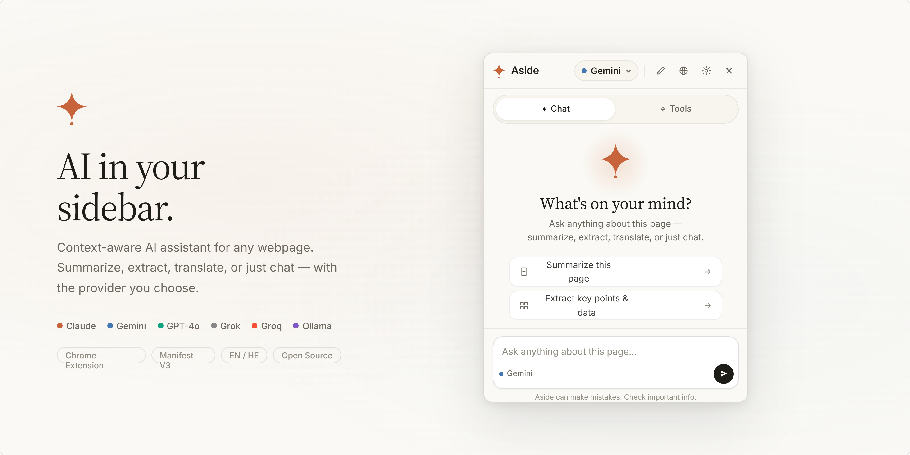
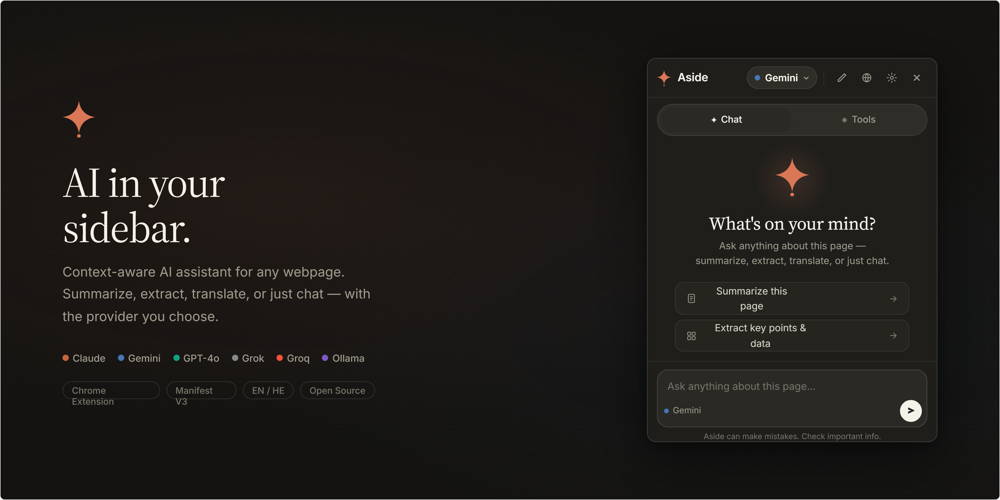
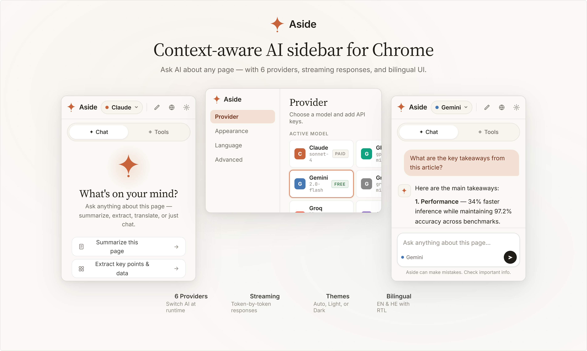
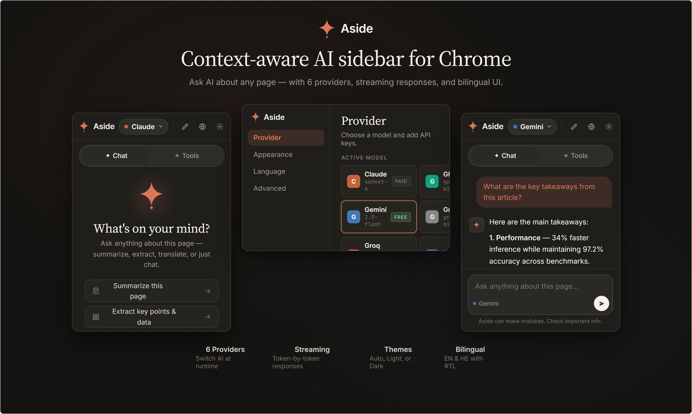
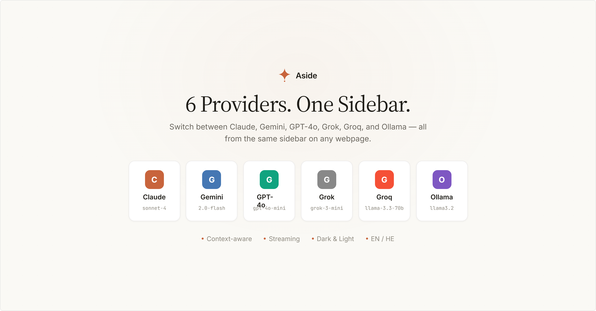
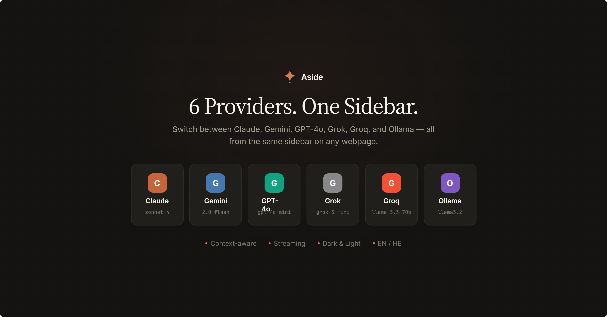
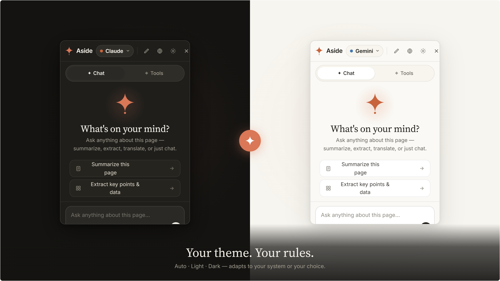

Side-by-side comparison
Pin two providers side-by-side and run the same prompt against both. Answers stream in parallel.
Aside puts Claude, ChatGPT, Gemini, Grok, Groq and local Ollama side-by-side in a sidebar that travels with you. Bring your own keys. Nothing leaves your browser.


Works with
Designed for people who ask the same prompt to three models before they trust an answer.
Pin two providers side-by-side and run the same prompt against both. Answers stream in parallel.
Add the API keys you already have. We never see them, never store them, never proxy them.
Every conversation stays in your browser storage. No accounts, no cloud sync, no analytics.
Save prompt snippets you actually use and fire them with one click.
Press Alt+A on any page. Context follows, sidebar stays out of the way.
Interface and responses in English, Hebrew, Spanish, French, German, Chinese, Arabic, and Japanese. Right-to-left handled correctly.
Familiar look, no glaring chrome — built to live next to whatever you're reading.





Two short setups. The first installs the extension; the second gets you a free API key so you can actually use it.
No build step, no npm. Just download and load the folder. About 30 seconds.
Grab the ZIP and unzip it anywhere on your machine.
Download ZIP →Paste chrome://extensions into the address bar and press Enter.
Top-right toggle. Without it, Chrome won't load an unpacked extension.
Click Load unpacked and select the unzipped Aside folder.
Click the puzzle icon in the toolbar and pin Aside so it's one click away.
Chrome only auto-assigns shortcuts for Web Store extensions, so set it once by hand: open chrome://extensions/shortcuts, find Aside, click the box next to Toggle the AI sidebar, and press Alt + A. Now it opens on any page.
Groq runs Llama 3.3 70B at conversational speed and has a generous free tier — perfect for daily use. About 60 seconds.
A clean sign-in page — Google, GitHub, or email all work.
Open console.groq.com/keys →No credit card required. The free tier covers tens of thousands of requests per day.
Click Create API Key, name it something like Aside, and confirm.
Groq shows the key once. Copy it now — you can always create another later.
Open Aside → Settings → Groq, paste the key, save. The sidebar validates it live before storing.
Aside is 100% client-side. API keys live in chrome.storage.sync (encrypted by Chrome, synced to your own Google account only). Requests go directly from your browser to the provider you chose. No telemetry, no analytics, no server in the middle.
Read the full Privacy PolicyThe extension is free and open source. You pay each AI provider directly for usage (or use a free tier — Groq and Gemini both offer one).
In chrome.storage.sync — Chrome encrypts them and syncs them across your own Chrome instances via your Google account. They never reach any server we control (there is no server we control). Conversation history is stored locally only.
Yes. Each provider ships with a sensible default, and you can switch model right from the composer — or in Settings → Model — e.g. Claude Sonnet 4.6, Opus 4.8, or Haiku 4.5. There's also a Custom field to type any model id the provider supports, so you're never stuck waiting for us to add a new one.
Anthropic Claude, OpenAI ChatGPT, Google Gemini, xAI Grok, Groq, and self-hosted Ollama. Adding more is straightforward — see the repo.
Eight: English, Hebrew, Spanish, French, German, Chinese, Arabic, and Japanese. Both the UI and the response language are switchable, with full RTL for Hebrew and Arabic.
Edge yes (Chromium-based). Firefox isn't packaged yet — contributions welcome.